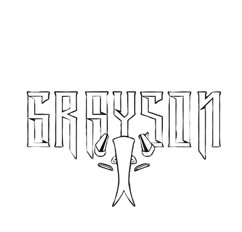
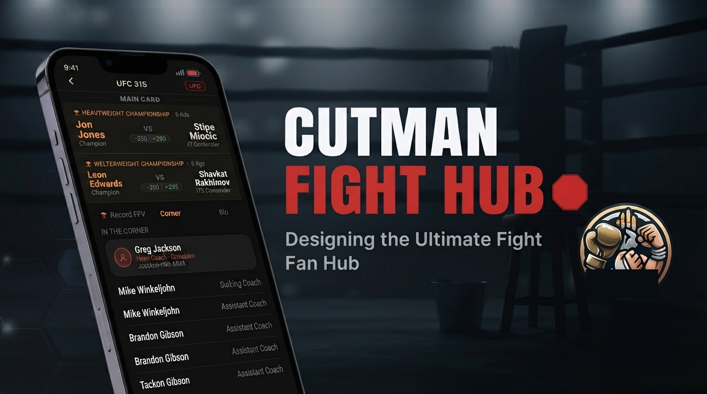
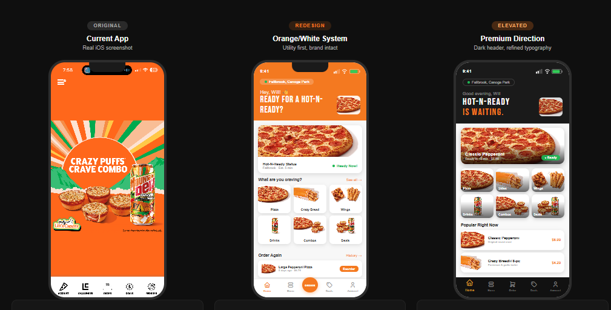
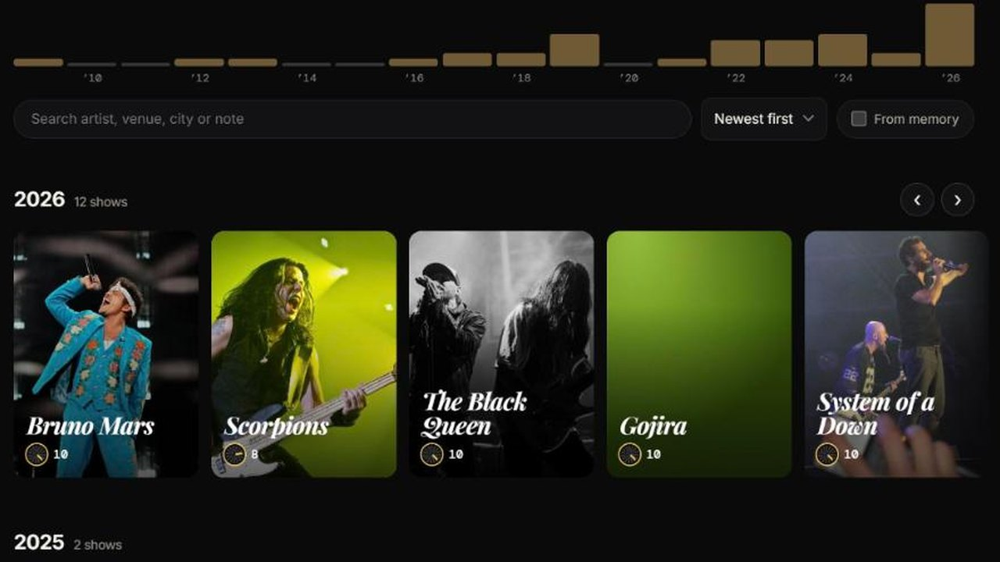

AI Product Designer
Self-taught, AI-native. I shipped SceneOne, a live AI screenplay feedback tool — solo. Learning more every day.
Scroll

Self-taught, AI-native. I shipped SceneOne, a live AI screenplay feedback tool — solo. Learning more every day.
The $100 coverage fee gatekeeps writers by wealth. SceneOne gives every writer studio-grade AI notes across 5 craft dimensions. Built and shipped solo — live at sceneone.net.

One app. Every promotion. All the fights. A personal combat sports hub that pulls live fight cards, fighter stats, and broadcast info from UFC, Boxing, PFL, and ONE into one clean interface.

Little Caesars has the best value in fast food — but their app makes it feel like a chore. I redesigned the full ordering flow: Hot-N-Ready real-time availability, a smarter menu, and a checkout that actually trusts the user.

A lifetime concert diary for die-hard live music fans. Log every show you've ever attended — no ticket, no proof needed. Conceived at a Black Queen show. 14 MVP screens built.
Every product starts with a real problem. I identify pain points, map the experience, and define what success looks like before a single screen is designed.
UI/UX decisions are deliberate. I think in flows, not just screens — prioritizing clarity, delight, and the moments that make users come back.
I use Claude, ChatGPT, and the full AI stack as a development partner — directing, iterating, and building real products faster than traditional workflows ever allowed.

I’m self-taught, AI-native, and I build things. Most recently SceneOne — a live AI screenplay feedback tool that gives every writer studio-grade notes without the $100 coverage fee. Designed, engineered, and shipped solo.
I’ve watched real people get frustrated by bad software my whole career. That frustration is why I design — products built for the user, not the developer.
When I’m not designing: combat sports, live music, cooking for my wife, and wrangling my nintendogs Eevee and Bowser.
Open to freelance, full-time, and fellowship opportunities.
Scrapbookers don't have a home. GoodNotes hits a 3-file wall immediately. Canva is a marketing tool — its layers are broken and its best templates are paywalled. Unfold exports to Instagram only, meaning a 100-page family scrapbook literally cannot be sent to grandma. Pic Collage forces watermarks on finished work and sits at a 3.9★ rating from a frustrated user base. Every competitor optimizes for the wrong output.
People aren't making scrapbooks to post on Instagram. They're making them to keep, share with family, and print. That realization — that every competitor is solving for social media virality instead of personal memory — is the product foundation everything else is built on.
Two personas drive every design decision. The Memory Keeper: women 25–45 making scrapbooks for weddings, milestones, travel, and holidays — currently duct-taping together GoodNotes and Canva and physical craft supplies, none of it feeling right. The Gift Maker: people building scrapbooks as gifts, who care deeply about the finished output looking polished and need to actually send it to someone.
The design went through three distinct stages before the current prototype. The first pass focused purely on the canvas layer model — getting the stacking order right before any visual polish. The second pass established the emotional tone: warm craft textures, Playfair Display typography, the "paper feel" that separates Scrap'd from every generic grid editor. The third pass locked the onboarding flow — the decision to get users into creation in under 60 seconds, skippable everywhere, no account required.
Every page is a 6-layer GPU-rendered canvas via react-native-skia. Layer 1: background paper. Layer 2: photos. Layer 3: stickers and washi tape. Layer 4: typed text and journaling. Layer 5: Apple Pencil or finger drawing with pressure sensitivity. Layer 6 (Tier 2): video and GIF. Nothing is destructive. Unlimited undo. 60fps target on iPhone 12 or newer — non-negotiable.
Full PRD complete across all 12 feature specs: library, canvas, photo import, stickers, washi tape, background papers, text, drawing, templates, sharing, onboarding, and offline architecture. Login and onboarding prototypes built. Design system established. Tech stack confirmed. Asset licensing strategy defined. Next phase: resolve 10 open questions in the PRD, then developer handoff spec.
My wife had her gallbladder removed. Overnight our cooking had to change — certain fats and ingredients were suddenly off the table. Every recipe app we tried was built for a single person with no restrictions and unlimited pantry access. None of them understood that real households are complicated: multiple people, medical needs, dietary preferences, and a fridge full of things you bought three days ago and forgot about. So I started building the app I actually needed.
OurTable is now a working web app. A household shares one recipe book, and every recipe answers one question before anything else: can everyone at the table eat this? The live demo runs in your browser on sample data, so nothing you do is sent to a server.
The home screen is a table. Every person in the household has a seat, and each seat shows whether that person can eat tonight’s dish. Tap a seat and it says what to swap, for example the salmon for marinated tofu. Kids and grandparents who don’t need an account still get a seat with their own dietary needs. If someone is out tonight, tap their name: they leave the table with a short animation, the seats re-space, and the recipe scales to the people actually eating.
Nobody cooks a recipe exactly as written. In OurTable you tell it what you changed in plain English, “I added twice as much garlic and used half the cream”, and it turns that into structured changes you confirm. The original is never overwritten. “Our version” is the original plus your changes, with each one shown next to what it replaced, and you can switch back to the original at any time. The dietary check runs on your version, so swapping the sausage for mushrooms counts for the vegetarian at the table.
Recipe Rescue helps when dinner goes wrong: a split sauce, too much salt, undercooked chicken. It ends in one of four answers: salvageable, partly salvageable, don’t eat this, or I need to know more. The safety boundaries are rules with automated tests, not suggestions. Food left out for more than two hours is always “don’t eat this”. Undercooked meat always asks for a thermometer and gives the temperature. It never calls food safe from a description or a photo, and the screen says it doesn’t read photos. No AI model runs anywhere in the app today. The architecture decides where one could go and where one never can.
Type “chicken, spinach, parmesan, rice” and the Ask page searches your own saved recipes, checks everyone’s diets, lists what you have and what is missing, and can add the missing items to the grocery list. It only searches your own book, so it never invents a recipe. Each recipe also gets a profile of traits such as garlicky, Italian-inspired and pan-seared, which powers “if you like this” suggestions and a home screen that learns from what you cook and rate. Diets are proven from the ingredients, never guessed from a tag.
Recipe evolution only works if people log their changes, so the trophy cabinet rewards exactly that. Four tracks of three objects each, drawn in one style: The Collection, Global Explorer, The Social Chef and The Perfectionist. “Family Secret” is the one that matters most: change a recipe three times and cook it at least three times, and it’s yours now. Three weekly stamps rotate every Monday and can only be earned that week. Progress runs left to right along a path, so you can always see what is next.
Rules first, AI later: The assistant, the change parser and Recipe Rescue all run on fixed rules. The cost is less flexible language: it understands common ways of saying things, and anything it can’t read is kept as a note instead of being lost. The benefit is that every safety behaviour is predictable and testable, with 279 automated checks.
Three looks, one default: An earlier round of design testing settled on a light, cookbook look. Feedback on the web build was that it felt too homey for everyone, so I made three looks, Hearth (warm), Midnight (dark) and Market (bright), and defaulted to Midnight. The cost is three themes to keep readable. I have not yet tested which look people prefer.
Household-first onboarding: The first question is “who’s at your table?”, not “what’s your name?”. The tradeoff is a slightly longer sign-up. The payoff is that dietary warnings work from the first recipe.
Demo first, accounts second: Anyone can use the app in seconds on sample data with no account. The real backend, built on Supabase, was tested separately with throwaway accounts. The cost is that the demo can’t show two people sharing a kitchen.
Built and working in the demo: the household table and per-person dietary checks, recipe book, recipe import from a link or pasted text, weekly planner, fridge and grocery lists, cook mode with step timers, recipe evolution, recipe profiles and similar recipes, the Ask page, Recipe Rescue, the trophy cabinet, and three looks.
Designed in an earlier native-app concept, not in the web build: the AI fridge scanner, Party Mode, cost per serving, food-waste tracking and pricing tiers. That concept ran to 45 screens. I would test whether people want them before building any of it.
Not done yet: testing with real households, syncing cook history and photos across devices, a legal review, and any AI model layer.
React, Vite, Tailwind and React Router on the front end. Supabase (Postgres, Auth, row-level security and an Edge Function for recipe import) behind it. The demo runs the same app on browser storage. The first concept was built in React Native and Expo.
I work helpdesk at a nationwide company — four people covering the entire org. Every day the challenge isn’t the work itself, it’s knowing what to handle first. I saw the same problem everywhere at SMBs: no dedicated IT staff, tickets piling up, no intelligent layer to sort signal from noise. So I started building one.
TriageAI is an AI-powered Tier 1 helpdesk subscription platform for small businesses. The system handles first-response, classifies and routes tickets, attempts resolution via a knowledge base, and only escalates what actually needs a human. Built for teams of zero to four — not enterprise IT departments.
Before writing production code, I built a full outreach system — prospect tracker, cold email sequences, follow-up cadences — and ran campaigns across law firms, dental offices, insurance agencies, and accounting firms in the LA area. 40+ businesses contacted. That outreach generated real market signal about messaging, pricing sensitivity, and the verticals most likely to convert first.
The average SMB spends $1,500–$4,000/month on a part-time IT contractor. TriageAI’s $400 entry tier replaces that spend entirely. The financial model shows profitability at 5 clients on the Growth tier — a realistic first-year target for a one-person operation. The pitch isn’t “try AI helpdesk.” It’s “cut your IT spend by 70% and never miss a ticket.”
Alongside validation I built: a working interactive demo (v4), a break-even calculator modeling the $400/$650/$999 subscription tiers, a full system wireframe covering Phase 1 and Phase 1.5, and a GitHub research checklist for the technical build. The financial model shows profitability at 5 clients on the Growth tier.
Phase 1 — TriageAI Core: Internal IT helpdesk for SMBs. AI handles Tier 1 resolution, escalates only what needs a human touch. Monthly health reports for owners.
Phase 1.5 — ClientDesk: Client-facing inbound triage. AI acknowledges instantly, classifies and routes to the right staff member, escalation timers prevent anything from falling through.
Phase 2 — Security Layer: Proactive monitoring, threat detection, and compliance reporting for SMBs who can’t afford enterprise security tooling.
A personal trainer with a genuinely unusual differentiator: he cosplays. Not as a side hobby kept off his brand — as a core part of who he is. Every agency he approached wanted to sand that down and give him a generic fitness brand. I did the opposite.
A complete brand identity system built from scratch: brand foundation and voice, visual identity with color palette and logo direction, content strategy with 4 content pillars, weekly posting framework, 90-day content calendar, 30 done-for-you caption templates, client onboarding kit, 4 fillable workout program templates, and a 50-prompt AI pack for Claude and ChatGPT.
The brand leans into the cosplay identity completely. The name, voice, visual direction, and content strategy all treat it as the differentiator it is — not something to hide. A trainer who cosplays isn’t a liability. It’s the entire hook. The clients who connect with that identity become the most loyal ones.
The client hasn’t activated the brand online yet. Rather than let the work sit idle, the system was generalized and productized — the full kit is now available as a digital download for personal trainers on Gumroad and Etsy. The same deliverables built for one client now serve an entire market.
Iron Arc is proof of two things: that the best brand work comes from listening to who the client actually is, and that good systems are worth more than one use. The work shipped. The pivot shipped. Both count.
News articles bury the actual point. Headlines lie or sensationalize. TL;DR summaries give you five bullet points when you needed one sentence. Nobody has time to read 800 words to find the thing that actually matters.
Paste any article, long email, press release, or wall of text. Briefed calls the Claude API and returns the essential truth of what you just read — in exactly 15 words or less. Not a rewrite of the headline. Not a bulleted summary. The one core claim the whole piece is really about.
The 15-word constraint is the product. It forces precision in a way that "summarize this" never does. Playfair Display gives it editorial credibility — it should feel like a sharp editor, not a chatbot. The dark UI with yellow-green signal color (`#e8ff47`) creates a signal-vs-noise visual language that reinforces the core idea.
The 15-word constraint didn’t come from intuition — it came from failure. Early prompts returned summaries that were technically accurate but 40–60 words long. They weren’t wrong, they were just useless for the use case. Tightening the constraint surfaced a new failure mode: the model started truncating instead of distilling, cutting off context rather than identifying the core claim. The final prompt architecture separates those two jobs — first identify the single most important claim, then express it in 15 words or fewer. The constraint is the product. The prompt engineering is what makes it work.
You sent the wrong tone and now the whole conversation is off. Or you didn't send anything at all because you couldn't figure out how to say it. Texts, emails, Slack messages — the register matters as much as the words, and most people don't have a second set of eyes on demand.
Paste any message — a frustrated text, a passive-aggressive email, something you typed in a heated moment — and ReplyRight returns three rewrites simultaneously: Calm (de-escalates, neutral), Warm (relational, empathetic), and Assertive (direct, no softening). Same point, three different registers. Pick the one that fits.
Three results served at once instead of asking you to pick a tone first — comparison is the whole value. Color-coded left borders (blue / amber / red) let you scan the register before you read the words. Light UI so the tool disappears into the workflow rather than demanding attention. The app icon and branding stay minimal because this is a utility, not a statement.
The hardest prompt engineering problem in ReplyRight wasn’t generating three tones — it was preventing the model from being sycophantic in Warm mode and aggressive in Assertive mode. Early outputs had Warm rewriting the user’s point entirely to avoid conflict, and Assertive dropping all empathy in ways that would escalate rather than resolve. The fix was explicit constraints per tone: Warm preserves the core message and adds relational acknowledgment; Assertive keeps the point but removes apology language only. Same message, calibrated register — not a different message per tone.